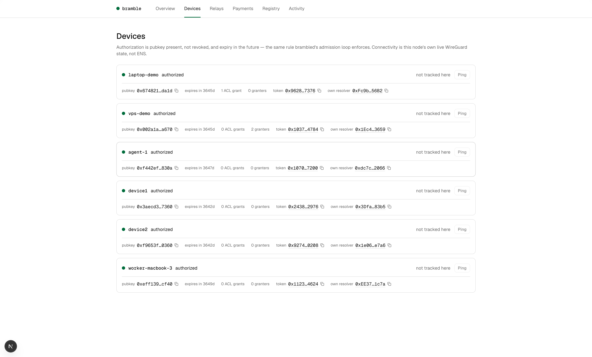
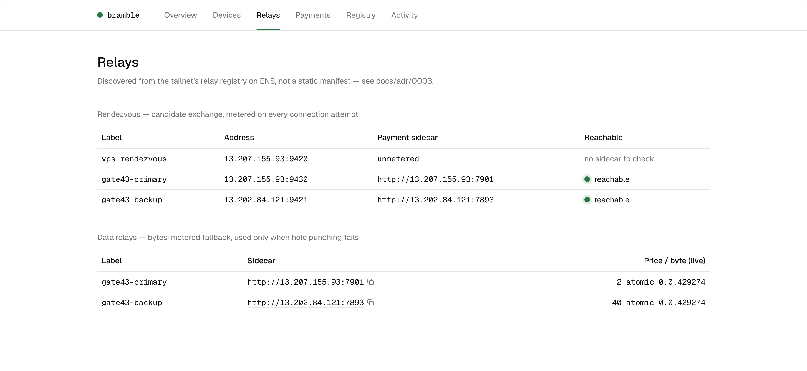
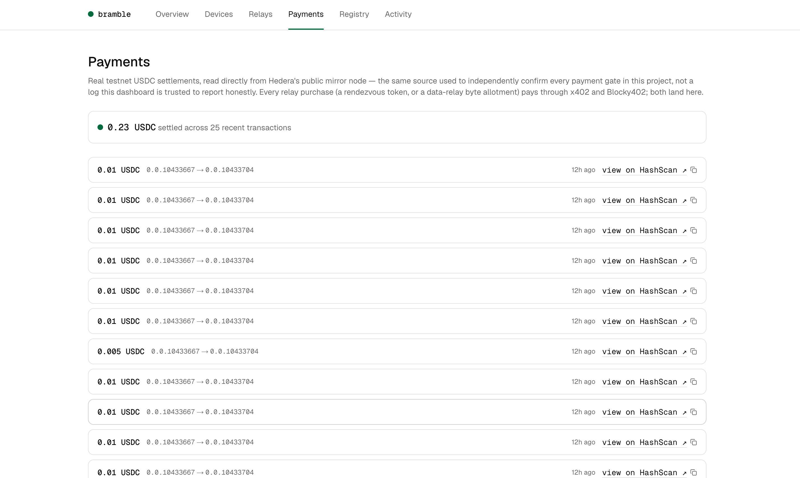
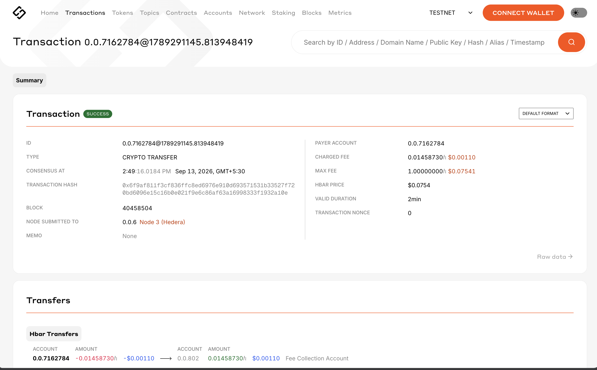
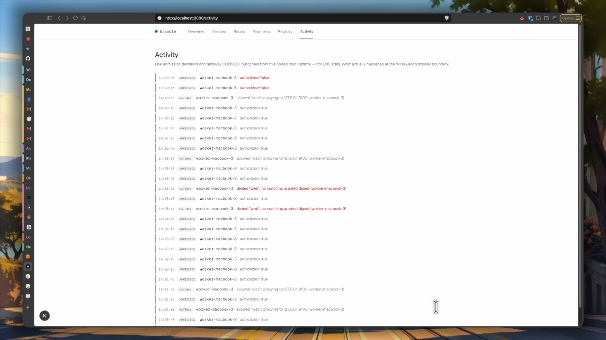

What it is
Bramble is a private WireGuard network for small teams and the agents they run. Each device checks an ENSv2 registry for membership and service permissions, so a relay can help with connectivity but cannot decide who joins. A team can give a worker access to one internal API, approve a wider grant when it needs one, and revoke its network access later. The API stays off the public internet. Peers can use ENS-listed relays for rendezvous or traffic forwarding, paying per session or byte allotment through x402 on Hedera rather than buying a seat for each device.
The system
01 / LEDGER
Enroll with human approval
Device-signed worker identity, confirmed on a physical Ledger.
02 / ENSv2
Grant, then revoke
Service access checked by the gateway against on-chain state.
03 / HEDERA
Pay for forwarding
x402 sessions, priced by bytes, settled in testnet USDC.
Real state, not mockups
Every screenshot below is a live read from Sepolia, the Hedera public mirror node, or this node's own runtime — not staged data.





How it's made
The Go node runs userspace WireGuard with local service forwarding. A TypeScript sidecar manages ENSv2 records and relay payments. Sepolia hosts Permissioned Registries and per-device resolvers storing device keys, mesh addresses, and access state. ENS Enhanced Access Control governs enrollment, key changes, access revocation, and grant management. Each node independently verifies records and updates its peers. The gateway validates scoped grants before forwarding requests. Ledger hardware wallets sign enrollment transactions; Key Ring encrypts the access grant secret. Relays are ENS-discoverable; nodes pay for relay sessions in testnet USDC via Hedera's x402 flow, priced per byte.